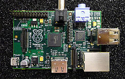
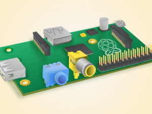
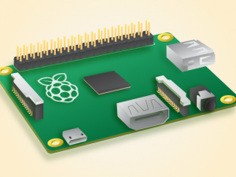
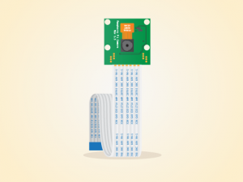
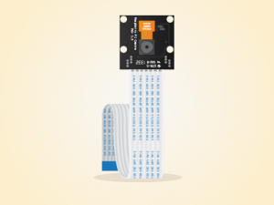

Que es la Raspberry Pi?
 Es un mini ordenador de una sola placa reducida de bajo coste, desarrollado en Reino Unido, por la Fundación Raspberry Pi, con el objetivo principal de ser utilizado en las escuelas para la enseñanza a la programación. Este pequeño dispositivo esta capacitado para explorar el dispositivo a cualquier persona independiente de su edad,y para aprender a programar en lenguajes como Scratch o Python. Es capaz de hacer todo lo que se espera de un ordenador de sobremesa, desde navegar por Internet, procesar textos, hojas de cálculo, hasta reproducir vídeos de alta definición. El diseño esta fabricado con un chip Broadcom BCM2835 que cuenta una CPU ARM con una velocidad a 700 MHz, disponiendo de un modo turbo para que el usuario pueda hacerle overclock a 1GHz sin perder la garantía y una GPU Videocore IV. Uno de los puntos fuertes que tiene la Raspberry Pi y por lo que es famosa es su comunidad, hay información en cantidad, compuesto de miles de usuarios avanzados en Linux, programadores y desarrolladores en el cuúl están dispuestos a ayudar en lo posible. Por el contrario uno de sus inconvenientes en esta era en la que estamos es su conexión a la red que a parte de ser 10/100 comparte bus con los puertos USB siendo más lenta la conexión, y que no dispone de un botón de encendido de serie, el mismo adaptador de corriente es el botón, bajo mi punto de vista se debería separar ese bus y aumentar a red gigabit.
Modelos
Actualmente existen cuatro modelos, los modelos A y A+ están destinados a desarrolladores para proyectos, mientras que los B y B+ siendo también para proyectos pueden servir para usos domésticos o escuelas. Los modelos A y B están diseñados con el mismo PCB mientras que A+ y B+ son un diseño diferente pero de forma similar.  
| Especificaciones | ||||
| Características | Modelo A | Modelo A+ | Modelo B | Modelo B+ |
|---|---|---|---|---|
| Socket BCM2835 | Sí | |||
| Velocidad estándar | 700 MHz | |||
| Memoria | 256 MB | 512 MB | ||
| Almacenamiento | SD | Micro SD | SD | Micro SD |
| Conectividad a Internet | No | 10/100 | ||
| Salida HDMI | Sí | |||
| Nº puertos USB 2.0 | 1 | 2 | 4 | |
| Consumo | 500mA/2.5W | N/A | 700mA/3.5W | 650mA/3W |
| Dimensiones | 85x56x17mm | 65x56x12mm | 85x56x17mm | |

Accesorios
Accesorios Principales
Para que funcione la Raspberry Pi hace falta una tarjeta SD o Micro SD según el modelo que se tenga, se recomienda que como mínimo tenga un tamaño de 8 GB para el S.O, aunque como digo yo mejor que sobre que no que falte, según el uso y el S.O que se instale puede ir mejor una tarjeta que otra, muy importante a la hora de su elección es coger una de clase 10 aunque eso no indica que una de menor clase no funcione. En este enlace hay una lista de sus usos y compatibilidades. Otro de los dispositivos se trata de un teclado que bien es cierto que si se controla remotamente o si se tiene un mando de la TV compatible con la tecnología CEAC y la Raspberry Pi no hace falta ningún teclado, pero para el que le haga falta en este enlace tenéis la lista. Otro dispositivo del mismo modo que el teclado es el ratón que aquí tenéis el enlace. Por último y el más importante es el adaptador de corriente que tiene que ser de 5V y Micro USB, el típico cargador de móvil ya sirve, pero ha habido casos que ha fallado, de modo que existen oficiales por las tiendas o bien puedes mirar en esta lista.
Accesorios Secundarios
Existen otros accesorios que no son importantes para hacer funcionar la Raspberry Pi pero si útiles y de gran ayuda. Tales como un módulo de cámara para la Raspberry Pi.  Esta cámara se puede utilizar para hacer vídeos de alta definición y hacer fotos. Dispone de 5 MegaPíxeles que soporta 1080p30, 720p60. Es fácil utilizarlo, pero para usuarios avanzados les será muy útil. También dispone de otro tipo de cámara que es la Noir que tiene las mismas características que la convencional, solo que esta tiene la pecularidad de que no utiliza un filtro infrarojo de modo que por la noche tiene la capacidad de ver con iluminación infraroja.  Otro de los dispositivos puede ser el dongle Wifi aunque yo no lo recomiendo si se pretende tener la Raspberry Pi como centro multimedia o como servidor, de todos modos aquí tenéis el enlace de compatibilidades. Se le puede conectar un hub USB si hiciera falta más USB, yo recomendaría que fueran autoalimentados, es decir que dispongan de adaptador de corriente propio al igual que los discos duros externos a conectar, porque al tener tan poca potencia la Raspberry Pi es posible que no funcione bien o que se apague automáticamente. Por último para proteger la Raspberry Pi ya que viene solo la placa, existen cajas aptas para ella incluso son bastante bonitas algunas. Aquí una tienda.
Fuentes : Wikipedia Raspberry Pi Periféricos verificados